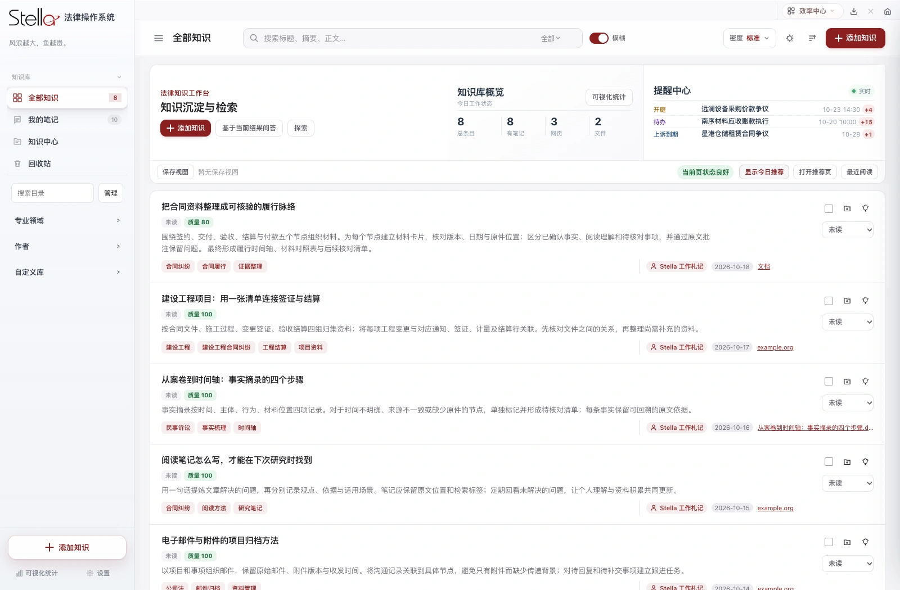
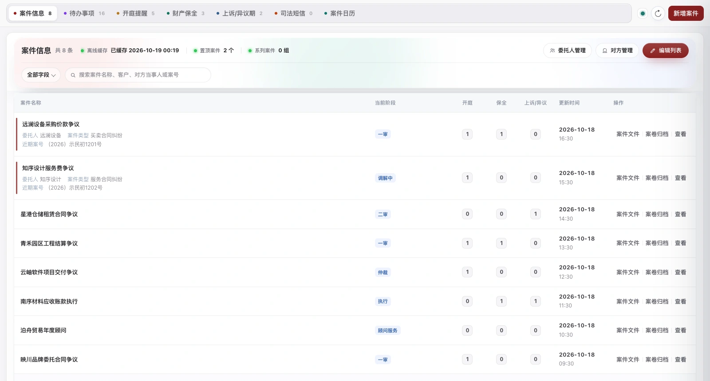
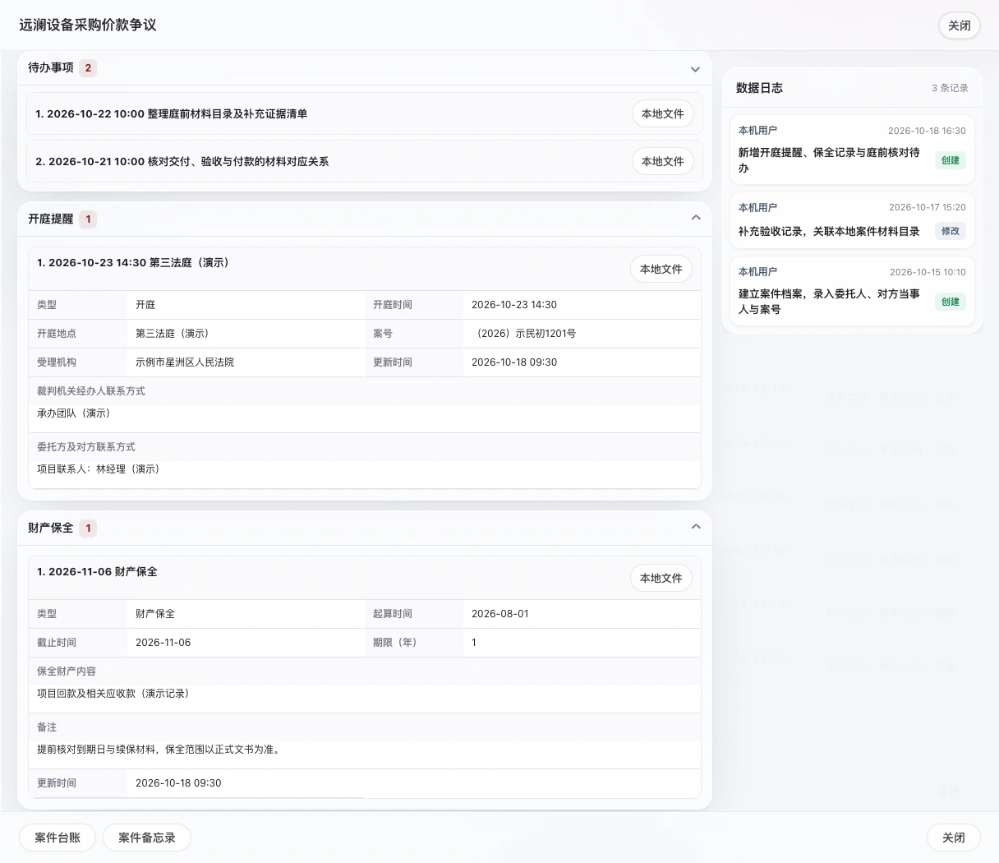

一份案件，串起全部日常。
普通案件与系列案件统一管理，Excel 批量导入、更新和回退。将本地文件夹绑定到案件，直接浏览、预览、整理文件，并对案件材料发起 AI 问答。
从法院短信到案件台账，从一篇文章到可复用的知识。
Stella 把办案、阅读、邮件与日常工具连接起来，
让重复的整理交给系统，让判断留给你。

案件全流程
知识深度整理
办公自动归集
01 / 案件管理
把案件档案、开庭、待办、保全和诉讼期限放在同一个工作台。
法院通知与本地材料顺着案件汇合，重要节点不再四处寻找。

案件管理 / 应用实景 · 8 个演示案件，关联待办、开庭、保全与期限查看大图 ↗
以设备采购争议为例：委托人与对方当事人、案号和法院、材料文件夹、庭前待办、开庭提醒及保全记录都已关联。进入详情，就能沿着同一件事继续处理。
普通案件与系列案件统一管理，Excel 批量导入、更新和回退。将本地文件夹绑定到案件，直接浏览、预览、整理文件，并对案件材料发起 AI 问答。
开庭、保全、上诉与异议期各有记录和提醒；案件日历可同步 Apple 日历，委托人可同步 iCloud 联系人。联系人、备忘和文件始终围绕同一个案件。
MAC 专属联动
iPhone 短信经 iCloud 同步到 Mac「信息」后，Stella 可识别司法通知，提取案号、法院、时间与事项，匹配本地案件。
符合自动处理条件时，生成关联待办、开庭或期限记录，并尝试下载送达文书；可归档的材料进入案件文件夹，需登录或核验的环节再由你接手。
需在 Mac 开启短信同步并授予读取权限，配置识别服务。识别或匹配不确定时，进入待确认流程。
同步人民法院在线服务的待办、消息、电子送达、我的案件与立案预约。按案号关联本地案件，筛选未读与重要记录；附件可预览、下载并归档到关联案件。
使用本人的法院账户登录；同步与下载状态可查看记录。
扫描本地立案文件夹，识别当事人、案由、诉请与附件分类。核对后辅助填写官网草稿、安排材料上传，将重复填表变成有步骤的任务。
最终提交、身份核验、验证码和电子签名由律师本人完成。
02 / 知识与阅读
把网页、公众号文章、文档和学习记录汇入知识库。
从收集、整理、阅读到检索，让每次积累都能再次派上用场。
识别正文标题层级，长文目录独立展示，点击直达相应段落；章节中的重复小标题也保留上下文。
根据正文提炼摘要，快速决定从哪里开始读。需要时重新生成或手动修订，让摘要跟上你的理解。
选中文字记录批注，阅读时随手写下思考。笔记可检索，也能跳回原文位置，观点与依据保持联系。
自定义库、标签组、专业领域与作者多维组织。全文检索覆盖标题、摘要、正文与笔记，命中位置直接高亮；飞书收集的链接可在下次启动时继续收录。
对单篇文章、一组标签、一个目录或案件文件提问。知识中心进一步组织“法律问题—规则结论—原文依据”，让整理后的经验可检索、可核验、可复用。
03 / 邮箱与发票
把常用邮箱带进同一个工作空间。
从收发邮件到整理附件、归集发票，少一些在窗口之间来回切换。
接入 QQ 邮箱、腾讯企业邮箱与网易企业邮箱，在各账户中阅读、搜索和发送邮件。富文本写信、联系人联想、附件预览与下载，覆盖常见收发场景。
按邮箱、时间和关键词扫描票据，识别 PDF、OFD、XML 等常见材料，核对开票时间、金额与来源邮件；筛除已导出记录，批量打包下载。
设置月度自动归集任务，按计划扫描上一个自然月并生成本机 ZIP。保留导出历史，遇到超时或识别问题可查看状态，继续补查。
04 / 研究与实务工具
查一个权威答问，算一段利息，生成一套文书。
围绕法律工作，把高频的小事做得更顺手。
检索最高人民法院公开的精选答问，按批次、专题与法律依据定位。提炼核心结论、记录个人笔记，支持范围问答和 Word 导出，并监测新批次。
支持固定利率、LPR 倍数与上浮 BP，按日期和利率变动分段计算。粘贴判决文字辅助识别本金与期限，导出带公式的 Excel，保留计算明细与历史。
所函、授权委托书、法定代表人证明书、业务审批表与文书合集集中生成，边填边预览。使用自己的律所名称与 Logo，导出后继续处理。
还有更多工作方式，等你接入。
案件研究法律雷达与晨报会议录音转写AI 与 MCP案卷归档更新日志
依据已合并的项目更新记录，
整理新增功能与体验改进。
05 / 准备开始
Mac 提供 Apple 芯片与 Intel 两版。
Windows 引导器联网准备所需组件。
Mac 在「关于本机」确认芯片，下载对应 DMG；Windows 选择引导安装器。
Stella…1.1.5.dmgMac 将 Stella.app 拖入「应用程序」；Windows 运行引导器，联网下载并准备组件。
在「应用程序」中启动 Stella。从案件台账或知识库开始，按需要连接邮箱、法院与 AI 服务。
准备就绪06 / 你可能想了解
Stella 面向律师与法务人员，连接案件管理、法院通知、知识阅读与办公工具。下载后即可建立自己的案件和知识库，邮箱、法院与 AI 功能按需配置。律所内部审批、会议和设备接入可联系作者定制。
Mac 版同时提供 Apple 芯片和 Intel 芯片安装包，要求 macOS 12 或更新版本。浏览器能够可靠识别时会推荐对应版本；无法确认时，请在「关于本机」查看芯片，再手动选择。Windows 版适用于 Windows 10 1809+ / Windows 11 的 Intel、AMD 64 位电脑，首次安装由引导器联网准备所需组件；暂不支持 ARM、32 位和 Windows Server。
公开仓库用于分发安装包、说明和许可，应用源码保持私有。使用需遵守仓库中的许可证：仅限非商业使用、禁止修改，并保留作者署名。第三方组件遵循各自许可。查看完整许可证 ↗
Mac 版可使用已同步到「信息」中的司法短信，需开启相关同步、授予读取权限并配置识别服务；Windows 版支持粘贴文本、TXT 或截图，预览确认后导入。一张网功能需登录自己的人民法院在线服务账户。涉及登录、核验或最终提交的步骤，按应用提示由本人完成。
需要。AI、邮箱、法院服务及 MCP 等功能使用你自己的账号或密钥。Windows 引导器会准备浏览器、文字识别和文档转换组件；Mac 的部分联网工具仍需按功能指引配置 Chrome 等外部应用。
1.1.3 / 1.1.4 起的 Mac 版可在应用菜单「检查更新…」收到更新，适用时使用签名增量包，并保留完整包回退；Windows 版会检查更新，并仅下载有变化的组件，复用其余组件。更早的 Preview 版没有内置更新器，未配置下载通道的 Windows 开发版也无法收到此次更新，需从本页手动安装一次新版。升级前请备份重要资料；旧 Mac 版若在应用包内保存过邮箱附件或发票导出，请额外复制一份旧 Stella.app 到其他目录留存，再升级。如遇问题，请前往 GitHub Issues 描述现象、应用版本与系统版本，避免上传真实案件或个人敏感信息。
STELLA / READY WHEN YOU ARE
Stella 1.1.5 · Mac / Windows · 可手动选择其他版本
1.1.5 · macOS 12+ · 323 MB
下载 DMG 安装包 SHA-256 校验1.1.5 · macOS 12+ · 348 MB
下载 DMG 安装包 SHA-256 校验面向 Windows 10 1809+ / Windows 11 的 Intel、AMD 64 位电脑。
下载引导安装器 SHA-256 校验1.1.5 公开体验版 · 首次安装需联网下载组件两种 Mac 版功能相同，仅芯片架构不同。Windows 使用文本、TXT 或截图确认导入司法短信；Mac 另提供 iCloud 短信联动、苹果通讯录与日历、生物识别、Finder 标签、录音及夸克、飞书联动。
发布说明与 SHA-256 校验